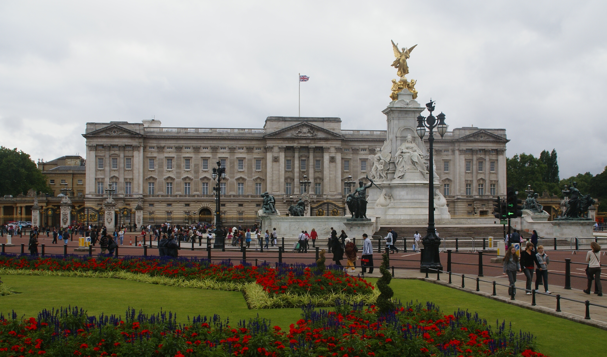

白金漢宮（Buckingham Palace）是英國君主位於倫敦的主要寢宮及辦公處。 宮殿坐落在西敏市，是國家慶典和王室歡迎禮舉行場地之一，也是一處重要的旅遊景點。在英國歷史上的歡慶或危機時刻，白金漢宮也是一處重要的集會場所。
1703年至1705年，白金漢和諾曼比公爵約翰·謝菲爾德在此興建了一處大型鎮廳建築「白金漢屋」，構成了今天的主體建築，1761年，喬治三世獲得該府邸，並作為一處私人寢宮。此後宮殿的擴建工程持續超過了75年，主要由建築師約翰·納西和愛德華·布羅爾主持，為中央庭院構築了三側建築。1837年，維多利亞女王登基後，白金漢宮成為英王正式宮寢。19世紀末20世紀初，宮殿公共立面修建，形成延續至今天白金漢宮形象。二戰期間，宮殿禮拜堂遭一枚德國炸彈襲擊而毀；在其址上建立的女王畫廊於1962年向公眾開放，展示皇家收藏品。現在的白金漢宮對外開放參觀，每天清晨都會進行著名的禁衛軍交接典禮，成為英國王室文化的一大景觀。
白金漢宮是現今世界上最廣為人知的建築物之一，它和著名的國會大廈、倫敦塔橋、紅色雙層巴士一樣，都是倫敦乃至整個英國的國際標誌。
白金漢宮不同於許多國家首都的著名歷史建築，白金漢宮並不是只供遊人參觀的博物館。這座宮殿是君主制的中心，是女王陛下作為英國國家元首和英聯邦領袖辦公和履行禮儀性職責的地方。女王平常會在白金漢宮工作，通常在周末會回到溫莎城堡。要知女王在不在宮殿里，只要看一看白金漢宮中央的旗桿就可以了﹔因為如果女王在宮里，旗桿上飄揚的會是君主旗，否則人們便會看到聯合王國旗（即英國國旗）。如遇到盛大的禮儀場合，在天氣允許的情況下，宮殿則會掛一面加大號的旗幟。
通常在聖誕節和一月期間，女王會住在諾福克的桑德林漢，她的私人莊園里。而八、九月則住在蘇格蘭高地上的巴爾莫勒爾堡。近年來，公眾可以趁女王公務日程的暑期間參觀白金漢宮的典禮廳，也就是其他時候用作官方職能和接見用的房間。迄今為止，白金漢宮已接待了來自世界各地的近400萬名參觀者。
白金漢宮的建築風格為新古典主義，主體建築為五層，其中兩層為服務人員使用的附屬層，高度較低。所以立面可以視為縱、橫三段式處理。
白金漢宮建築外立面裝修材料為巴斯石灰岩。內部裝修則以人造大理石及青金岩為主。正面廣場圍以鑄鐵柵欄，為皇家衛隊換崗儀式的場所。廣場外為手持權杖、塑造為天使形象的維多利亞女王雕像。宮殿正面入口面向東北方，通過林蔭路（The Mall）與特拉法爾加廣場相連。
白金漢宮的附屬建築包括皇家畫廊、皇家馬廄和花園。皇家畫廊和皇家馬廄均對公眾開放參觀，其中皇家畫廊內收藏有魯本斯、倫勃朗、弗美爾、蓋恩斯巴勒、卡拉內羅等人的繪畫作品、卡諾瓦等人的雕塑作品。每年夏天，英國王室在花園內舉辦盛大的皇家招待會。
